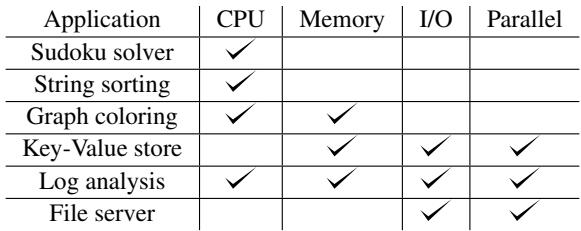

Investigating Managed Language Runtime Performance: Why JavaScript and Python are 8x and 29x slower than C++, yet Java and Go can be Faster? 通俗讲解¶
0. 整体创新点通俗解读¶
痛点直击
- 这篇论文要解决的核心问题，是Managed Language（托管语言）的性能迷雾。开发者在选型时，面对 JavaScript、Python、Java、Go 等流行语言，常常陷入两难：一边是它们带来的开发效率和安全性，另一边却是对其运行时性能和可扩展性的巨大不确定性。
- 之前的状况“很难受”在于：
- 信息混乱：网上充斥着各种“宗教式”的争论和片面的轶事，缺乏严谨、科学的横向对比。有人说 Java 比 C++ 快，有人说 Python 在某些场景下碾压 C++，但都没有系统性的证据。
- 工具缺失：现有的 Profiler 只能告诉你“哪里慢”，但无法深入到 Runtime 内部，精确地告诉你“为什么慢”。比如，V8 引擎里动态类型检查到底花了多少 CPU 周期？CPython 的字节码解释器每条指令的真实开销是多少？这些关键信息对开发者来说是黑盒。
- 基准不公：已有的基准测试（如 DaCapo）都是为单一语言设计的，无法公平地比较不同语言在相同 workload 下的表现。
通俗比方
- 这篇论文的工作，就像是给几辆不同品牌的汽车（C++, Go, Java, JS, Python）做了一次全面、透明的“发动机台架测试”。
- 以前大家只能看官方宣传（博客、社区吹嘘），或者自己开着车在街上跑一圈（用现有 benchmark），感觉“这车好像挺快/挺慢”。但这很容易受路况（具体应用）、司机技术（代码写法）影响，结果不可靠。
- 而这篇论文的作者们，直接拆开了这几辆车的引擎盖（Runtime），在实验室里用精密仪器（CPU 性能计数器）测量每个活塞（字节码指令）、每个喷油嘴（类型检查）的工作效率。他们还设计了一套标准化的驾驶循环（LangBench），确保所有车都在完全相同的条件下测试，从而得出真正客观、可复现的结论。
关键一招
- 作者并没有满足于做一个简单的性能排行榜，而是通过两个核心贡献，从根本上解决了上述痛点：
- 第一招：打造了“Runtime 内窥镜”。他们首次公开了对 OpenJDK、V8 和 CPython 这三大主流 Runtime 的深度插桩（Instrumentation）。这个内窥镜能精确测量：
- 任何一条字节码在解释器中的执行开销。
- V8 JIT 代码中动态类型和边界检查的具体开销。 这使得“性能调优”从玄学变成了科学，开发者可以精准定位瓶颈。
- 第二招：创建了公平的“竞技场” LangBench。他们从零开始构建了 6 个覆盖不同计算、内存、I/O 特性的应用，并为每种语言都提供了概念上一致但符合各自 idiomatic 风格的实现。这确保了比较的是 Runtime 本身的性能，而不是某个语言生态里某个库的优劣。
- 第一招：打造了“Runtime 内窥镜”。他们首次公开了对 OpenJDK、V8 和 CPython 这三大主流 Runtime 的深度插桩（Instrumentation）。这个内窥镜能精确测量：
 Figure 2: Relative completion times for various language implementations normalized to optimized code under GCC. Note the logarithmic scale of the y axis. “LA” refers to the log analysis application. The numbers at the bottom shows the benchmark’s absolute execution time in the C++ implementation. For benchmarks with concurrency, the “Best” bars are annotated with the thread count that results in best completion time. For key-value store and file server it is the number of client threads, not the number of threads used server side. For GCC and OpenJDK, the server creates 1 (kernel) thread to handle each client thread, so the number of server-side threads is the same as the client. For both Node.js and CPython, their best completion time in key-value store is achieved when using a single server-side thread (due to their scalability characterstic described in §7). As for the file server benchmark, both Node.js and CPython’s best performance is achieved when using 64 server-side threads (§7). The number of server-side threads in Go is automatically determined by the runtime as described in §8.2. The number of threads for log analysis is the number of worker threads (as there is no client).
Figure 2: Relative completion times for various language implementations normalized to optimized code under GCC. Note the logarithmic scale of the y axis. “LA” refers to the log analysis application. The numbers at the bottom shows the benchmark’s absolute execution time in the C++ implementation. For benchmarks with concurrency, the “Best” bars are annotated with the thread count that results in best completion time. For key-value store and file server it is the number of client threads, not the number of threads used server side. For GCC and OpenJDK, the server creates 1 (kernel) thread to handle each client thread, so the number of server-side threads is the same as the client. For both Node.js and CPython, their best completion time in key-value store is achieved when using a single server-side thread (due to their scalability characterstic described in §7). As for the file server benchmark, both Node.js and CPython’s best performance is achieved when using 64 server-side threads (§7). The number of server-side threads in Go is automatically determined by the runtime as described in §8.2. The number of threads for log analysis is the number of worker threads (as there is no client).
- 通过这套组合拳，他们得出了几个颠覆常识的结论：
- V8/Node.js 和 CPython 的性能劣势主要源于其核心设计：JS 的动态类型检查和 Python 的纯解释器+GIL，导致它们在 CPU 密集型任务上分别比 C++ 慢 8x 和 29.5x，并且几乎无法利用多核。
- Java 和 Go 的性能完全可以与 C++ 竞争：得益于成熟的 JIT（Java）和 AOT 编译（Go），它们平均只慢 1.43x 和 1.30x，并且能完美扩展到多核。
- 最反直觉的发现：Runtime 的抽象层有时反而能带来性能优势！例如，OpenJDK 的移动式垃圾回收器（moving GC） 通过重排内存对象，意外地改善了缓存局部性，在某些场景下甚至超越了手动优化的 C++ 代码。Go 的goroutine 调度器通过减少内核线程和上下文切换，也在高并发 I/O 场景下击败了 C++。
1. Runtime Instrumentation for Bytecode and Type Checking¶
痛点直击
- 以前我们看一个 Python 或 JavaScript 程序跑得慢，只能看到“整体花了多少时间”，但根本不知道是语言运行时（Runtime）里哪个环节在拖后腿。是因为解释器太慢？还是因为动态类型检查太频繁？这些关键信息被运行时系统完全“黑盒”了。
- 开发者只能靠猜、靠经验去优化，比如“听说用
__slots__能提速”，但不知道这招对自己程序到底有没有用，或者能提升多少。这种盲人摸象式的优化效率极低。 - 更要命的是，像 V8 这样的 JIT 编译器，它会做很多激进的推测性优化（比如假设某个变量永远是整数），但一旦类型变了，就要回退（de-optimize），这个过程的开销有多大，开发者完全无法量化。
通俗比方
- 想象你要诊断一辆跑车为什么跑不快。以前你只能看仪表盘上的总里程和总耗时。这篇论文干的事，相当于给引擎、变速箱、刹车系统都装上了高精度的传感器，让你能精确知道每个气缸点火花了多少毫秒，每次换挡的顿挫损失了多少马力。
- 具体到类型检查，这就像是给汽车的燃油系统加了个分析仪，能实时告诉你：“刚才那0.1秒的迟滞，是因为ECU在反复确认你加的是95号汽油而不是柴油”。有了这个，你才知道该去换油还是该修ECU。
关键一招
- 作者没有去构建一个全新的性能分析工具，而是直接侵入式地修改了三大主流运行时（OpenJDK, V8, CPython）的源代码，在它们最核心的执行路径上植入了测量探针。
- 对于字节码解释器：
- 在 OpenJDK 和 V8 中，它们的解释器不是用 C++ 写的，而是用汇编或自定义 IR（Intermediate Representation）手写的。作者巧妙地在这些底层代码块的开头和结尾，注入了读取 CPU TSC (Time Stamp Counter) 的指令序列（如
rdtscp），从而能以CPU周期级的精度测量单条字节码的执行开销。  Figure 1: The sequence of assembly instructions inlined into the processing of each bytecode instruction.
Figure 1: The sequence of assembly instructions inlined into the processing of each bytecode instruction.- 对于 CPython，因为它就是 C++ 写的，所以修改起来相对简单，直接在字节码分发循环里加计时逻辑即可。
- 在 OpenJDK 和 V8 中，它们的解释器不是用 C++ 写的，而是用汇编或自定义 IR（Intermediate Representation）手写的。作者巧妙地在这些底层代码块的开头和结尾，注入了读取 CPU TSC (Time Stamp Counter) 的指令序列（如
- 对于JIT编译代码中的类型/边界检查：
- 作者更进一步，他们修改了 V8 的 JIT 编译器本身。他们引入了一种新的 IR 节点，当 JIT 编译器遇到需要对某个 JS 函数进行类型检查时，可以围绕这些检查代码生成带开关的测量桩。
- 这样，开发者不仅能知道类型检查花了多少时间，甚至可以选择性地关闭某个已知是安全的函数的检查（比如一个只处理
Int8Array的函数），从而直接验证“如果去掉这些安全网，性能能提升多少”。论文中就用这招，在排序 benchmark 里实现了 8倍的加速。
- 这套方法的核心在于，它把原本不可观测的、运行时内部的“暗物质”开销，变成了可测量、可分析、甚至可干预的明确数据，为性能优化提供了坚实的科学依据，而不是玄学。
2. LangBench Benchmark Suite¶
痛点直击
- 以前的跨语言性能比较，根本就是“鸡同鸭讲”。像 DaCapo 这种 Java 专属的 benchmark，让你拿它去测 Python 或 Go？那等于逼人用 C++ 重写一个 Eclipse IDE，这根本不现实。
- 网上那些“XX语言吊打YY语言”的博客，全是基于各自最拿手的玩具例子，要么是纯计算，要么是纯 I/O，完全没法反映真实世界里那种 计算、内存、I/O、并发 混杂在一起的复杂场景。
- 最要命的是，大家争论的焦点（比如动态类型开销、GIL影响、GC效率）根本找不到一个公平的擂台来验证。你测你的，我测我的，数据对不上，结论自然也是各说各话。
通俗比方
- LangBench 就像是为不同国家的运动员（编程语言）设计的一套标准化全能十项全能比赛。
- 它不是只比100米短跑（纯计算），也不是只比马拉松（长时运行），而是精心设计了六项不同的挑战：有考验逻辑和回溯的 Sudoku Solver（像解谜），有考验内存和算法的 String Sorting（像整理档案），还有模拟真实服务的 Key-Value Store 和 File Server（像开网店）。
- 最关键的是，所有运动员都必须用同一套规则、在同一片场地上完成这六项挑战。这样，最后谁快谁慢，瓶颈在哪，就一目了然了，再也没法甩锅给“测试不公平”。
关键一招
- 作者没有去找现成的、但语言偏向性极强的 benchmark，而是从零开始，亲手为五种语言（C++, Go, Java, JS, Python）实现了完全相同逻辑的六个核心应用。
- 为了确保公平，他们做了两件至关重要的事：
- 算法与逻辑对齐：每个应用在不同语言中的实现，其核心算法、数据结构和控制流都保持概念上的一致。比如，哈希表冲突都用链表解决，排序都用原地归并。
- 场景覆盖全面：这六个应用被刻意设计成能暴露不同语言运行时的核心差异。例如：
- Sudoku/Sort 主要压榨 CPU，暴露解释器/JIT/类型检查的开销。
- Key-Value Store/File Server 引入网络和磁盘 I/O，并通过调节客户端线程数，直接测试并发模型（GIL vs Goroutines vs Event-loop）的伸缩能力。
- Log Analysis 则混合了 CPU（正则/索引查询）和 I/O，并支持多进程/多线程，能同时考验计算并行和通信开销。
- 正是这种端到端、场景化、且严格对齐的设计，让 LangBench 成了一个真正能揭示“为什么 JavaScript 和 Python 慢，而 Java 和 Go 有时能更快”这一问题的利器。
 Table 1: The applications and the component(s) they stress.
3. Analysis of Dynamic Type and Bounds Checking Overhead¶
痛点直击
- 以前大家总觉得 JavaScript 慢是“天经地义”的，但没人能说清楚到底慢在哪。这种模糊认知让开发者优化时如同盲人摸象。
- 这篇论文一针见血地指出，在 V8/Node.js 中，动态类型检查（Dynamic Type Checking）和边界检查（Bounds Checking）这两个看似微不足道的安全机制，在某些计算密集型场景下，竟然能吃掉 高达 87% 的执行时间。这才是性能的真正“吸血鬼”。
- 更难受的是，即使你的代码逻辑非常简单（比如只操作整数），V8 为了保证语言的动态特性，也必须在每次数组访问时都做全套检查，造成了巨大的、不必要的开销。
通俗比方
- 想象你在一个高度安全的仓库里取东西。每次你要拿一个箱子（
board[x][y]），保安（V8 引擎）都必须对你和箱子进行一套完整的安检流程：- 先确认你是不是本人（检查
x是不是数字）。 - 再确认你要去的区域是不是仓库（检查
board是不是对象）。 - 然后确认那个区域有没有这个编号的货架（检查
board的内部结构是不是数组）。 - 接着确认货架上有没有这个编号的格子（第一次边界检查）。
- 最后还要看格子里是不是空的（检查“hole”）。
- 先确认你是不是本人（检查
- 而在 C++ 或 Java 这样的静态语言里，相当于你进仓库前就已经办好了通行证，保安知道你只会去特定区域拿特定东西，所以大部分检查都可以省略，直接让你进去拿就行。V8 的问题在于，它对每个人都执行全套安检，哪怕这个人每天都来、路线固定。
 Figure 3: Checks required to access board[x][y] in V8/Node.js.
Figure 3: Checks required to access board[x][y] in V8/Node.js.
关键一招
- 作者并没有试图去修改 V8 引擎本身（那太难了），而是通过精细的运行时测量，精准定位了性能瓶颈，并给出了一个巧妙的编程模式规避方案。
- 核心洞察在于：V8 对稀疏数组（Sparse Arrays）和密集数组（Packed Arrays）的处理方式截然不同。稀疏数组需要额外的“hole”检查，而密集数组则不需要。
- 因此，作者的关键一招是：改变数组的创建方式。不要用
new Array(9)这种会创建稀疏数组的方式，而是通过不断push预先初始化好的Int8Array来构建一个 V8 能识别为“packed”的数组。- 这个简单的改动，就绕过了最耗时的“hole”检查环节。
- 在 Sudoku 基准测试中，仅此一项优化就带来了 1.48倍 的性能提升。
- 这揭示了一个深刻的道理：在动态语言中，数据的内存布局（Memory Layout）对性能的影响远超我们的想象。了解运行时的内部工作机制，可以指导我们写出更高效的代码。
4. Garbage Collection Write Barrier Cost¶
痛点直击 (The "Why")
- 以前大家总觉得 Garbage Collection (GC) 的开销主要在“回收”那一刻，也就是 Stop-The-World 或者并发标记/清理时。所以优化都集中在减少 GC 暂停时间、提高吞吐量上。
- 但这篇论文戳破了一个盲点：对于像 排序（Sort） 这种大量交换指针的计算密集型任务，GC 根本没怎么运行，程序却依然慢得离谱。真正的罪魁祸首是那个一直默默存在的 Write Barrier（写屏障）。
- Write Barrier 就像一个尽职但啰嗦的保安，每次你的程序想修改一个对象的引用（比如
a[i] = b），它都要先跳出来检查、记录一番，以确保 GC 能正确追踪对象关系。这个操作虽然单次很快，但在高频操作（如排序中的元素交换）下，其累积开销就变得极其恐怖，甚至完全淹没了核心计算逻辑本身。
通俗比方 (The Analogy)
- 想象你在高速公路上开车（执行你的核心程序）。以前你觉得堵车是因为收费站（GC 暚停）太慢。但其实，问题出在你车上装了一个实时行车记录仪（Write Barrier）。
- 这个记录仪有个规定：每次你转动方向盘（修改指针），它都必须立刻拍一张照片并上传到云端。在市区低速行驶时（普通应用），这点延迟你感觉不到。但当你在高速上需要频繁微调方向（如排序算法中不断交换数组元素）时，这个拍照上传的动作就成了巨大的负担，让你根本跑不快。
- 更糟的是，不同的记录仪（GC 算法）效率还不一样。OpenJDK 默认的 G1 GC 用的是一款功能强大但笨重的记录仪，而 Parallel GC 用的则是一款轻便快捷的型号。
关键一招 (The "How")
- 作者没有去发明新的 GC 算法，而是通过精细的指令级剖析，直接定位到了性能瓶颈的根源——Write Barrier 的指令开销。
- 他们发现，在 OpenJDK 的 G1 GC 中，一次简单的指针写入操作，背后竟然附带了 44 条额外的 CPU 指令来执行 Write Barrier，而实际的交换操作本身可能只需要 6 条指令。这简直是本末倒置！
- 通过切换到 Parallel GC，Write Barrier 的指令数骤降到 5 条，性能立刻从比 C++ 慢 10x 提升到只慢 2x。这揭示了一个关键事实：Write Barrier 的成本与 GC 是否频繁触发无关，它是一个与指针写入频率成正比的常量开销。
- Go 的情况类似，它的 Write Barrier 虽然比 G1 轻量，但依然构成了其在排序任务上落后于 C++ 的主要原因。
 Table 2: We modified V8’s JIT compiler and removed each of the checks performed for a 2D array access to board[x][y] shown in Figure 3. We measured the resulting execution time, and compare it against the default execution time with all checks. We also show the execution time when all checks are removed.
Table 2: We modified V8’s JIT compiler and removed each of the checks performed for a 2D array access to board[x][y] shown in Figure 3. We measured the resulting execution time, and compare it against the default execution time with all checks. We also show the execution time when all checks are removed.
这张表清晰地展示了不同 GC 策略下 Write Barrier 的巨大差异。它告诉我们，选择合适的 GC 算法，有时比优化业务代码更能立竿见影地提升性能，尤其是在处理指针密集型工作负载时。
5. Scalability Limitations of GIL and Event-Loop Models¶
痛点直击
- 以前大家总以为，只要把任务拆成多线程或多进程，程序就能跑得更快。但对于 CPython 和 Node.js 这类运行时，这个想法在 CPU-bound（计算密集型）任务上会“翻车”。
- CPython 的 GIL (Global Interpreter Lock) 强制所有 Python 线程在执行字节码时必须排队，哪怕你有 16 个物理核心，同一时刻也只有一个线程能干活。这就像给一个超级高速公路只开一个收费口，后面再多的车也只能干等着。
- Node.js 的 单线程事件循环 (single-threaded event loop) 模型，虽然能高效处理大量 I/O 事件（比如网络请求），但所有业务逻辑（JavaScript 代码）都挤在这个唯一的线程里执行。一旦你的任务是算数而不是等网络，加再多的 Worker Thread 也没用，因为它们之间通信需要 序列化/反序列化 (serialization/deserialization) 数据，这笔开销在计算密集型场景下大到足以抵消并行带来的好处，甚至让性能变得更差。
通俗比方
- 想象你要组织一个大型拼图比赛。
- Go/Java/C++ 的方式是：给每个参赛者（线程）发一套完整的拼图碎片和一张桌子，大家各自独立完成自己的部分，最后把成品拼起来。人越多，完成越快。
- CPython (GIL) 的方式是：所有参赛者围着一张桌子，但规则规定，同一时间只能有一个人碰拼图。其他人就算闲着，也只能看着。你叫来的人越多，现场越拥挤，大家互相挡路，效率反而更低。
- Node.js (Event Loop) 的方式是：有一个超级聪明的主理人（事件循环线程）负责所有拼图工作。你可以雇佣很多助手（Worker Threads），但他们不能直接碰主理人的拼图。每次主理人需要帮忙，都得把当前拼图的状态写成一份详细的说明书（序列化），交给一个助手；助手干完活后，又得把结果写成另一份说明书（序列化）交还给主理人。如果拼图本身很简单（I/O-bound），写说明书的时间可以忽略；但如果拼图非常复杂（CPU-bound），写说明书的时间可能比拼图本身还长，叫来的助手越多，来回传递说明书的开销就越大，整体进度就越慢。
关键一招
- 这篇论文并没有提出新的并发模型，而是通过精密的实验和剖析，清晰地量化并揭示了这两种流行模型的根本性缺陷。
- 作者的关键洞察在于，他们区分了 I/O-bound 和 CPU-bound 场景，并证明了：
- 在 I/O-bound 场景（如 File Server），GIL 和 Event Loop 的限制不构成瓶颈，因为线程/事件大部分时间都在等待磁盘或网络，此时 CPython 和 Node.js 也能通过多进程或多 Worker 扩展。
- 但在 CPU-bound 场景（如 Log Analysis, Key-Value Store），任何试图通过增加线程/Worker 来提升性能的努力都是徒劳甚至有害的。论文中的数据明确显示，对于 CPython 和 Node.js，最佳线程数就是 1，增加线程只会因 序列化开销 或 GIL 争用 而导致性能下降。
- 论文通过 LangBench 基准测试，用具体数字（如 Node.js 在多 Worker 下性能下降 4.7x，CPython 多进程下降 4.9x）将这个抽象的“扩展性限制”变成了开发者可以直观理解和决策的硬指标。
Figure 2: Relative completion times for various language implementations normalized to optimized code under GCC. Note the logarithmic scale of the y axis. “LA” refers to the log analysis application. The numbers at the bottom shows the benchmark’s absolute execution time in the C++ implementation. For benchmarks with concurrency, the “Best” bars are annotated with the thread count that results in best completion time. For key-value store and file server it is the number of client threads, not the number of threads used server side. For GCC and OpenJDK, the server creates 1 (kernel) thread to handle each client thread, so the number of server-side threads is the same as the client. For both Node.js and CPython, their best completion time in key-value store is achieved when using a single server-side thread (due to their scalability characterstic described in §7). As for the file server benchmark, both Node.js and CPython’s best performance is achieved when using 64 server-side threads (§7). The number of server-side threads in Go is automatically determined by the runtime as described in §8.2. The number of threads for log analysis is the number of worker threads (as there is no client).
6. Performance Advantages from Runtime Abstractions¶
痛点直击 (The "Why")
我们总有个根深蒂固的观念：抽象是有代价的。C++之所以快，就是因为它让你直接“贴地飞行”，几乎没有中间层。而像Java、Go这些托管语言（Managed Language），它们在你和硬件之间塞了一堆东西：垃圾回收器（GC）、调度器、I/O库……这些东西看起来只会拖慢速度。
- 之前的认知是，这些运行时（Runtime）组件纯粹是性能开销。开发者为了安全和便利付出了速度的代价。
- 但这篇论文发现，在某些特定场景下，这种“拖累”反而成了加速器。问题就出在，传统的性能优化往往只盯着“减少指令数”或“避免函数调用”，却忽略了内存布局、系统调用效率和上下文切换这些更宏观但影响巨大的因素。
通俗比方 (The Analogy)
想象一下你在整理一个巨大的仓库（内存）。
- C++的方式就像是你自己搬箱子。你非常清楚每个箱子的位置，搬起来很快。但如果你一开始把箱子胡乱堆放（比如按插入顺序），那么当你需要频繁访问某一类关联的箱子时，就得满仓库跑，效率极低。
- 托管语言的方式就像是雇了一个专业的仓库管理员（Runtime）。他可能会花点时间（GC暂停）来重新整理仓库，把相关的箱子都放到同一个货架上。虽然整理本身要花时间，但之后你取货的速度会快到飞起。这个管理员还很聪明，他知道怎么用最省力的方式开门（I/O系统调用），也知道怎么安排工人（线程）干活，避免大家挤在门口互相推搡（上下文切换）。
关键一招 (The "How")
作者通过精细的剖析，揭示了三个反直觉的“加速”机制：
-
OpenJDK的移动式GC改善缓存局部性：
- 核心逻辑：作者发现，在哈希表遍历这类操作中，性能瓶颈不在于计算，而在于内存访问的随机性。C++的
malloc和Java的bump-pointer分配器都会按对象创建顺序分配内存，导致逻辑上相连的链表节点在物理内存上相隔甚远。 - 关键扭转：OpenJDK的移动式垃圾回收器（Moving GC） 在回收内存时，会按对象的引用关系重新排列它们在内存中的位置。这相当于在回收垃圾的同时，顺手把仓库整理了一遍，让链表节点在物理内存上也变得连续。结果就是，尽管Java执行的指令更多，但缓存命中率大幅提升，最终速度反超C++。
 Figure 5: The key-value store before and after a GC pause. White boxes logically represent Java objects, and the shaded boxes represent the objects’ location in the JVM heap. A ‘B’ denotes a bucket mapped to by the hash function, and an ‘N’ denotes a node in the bucket’s linked list. The number of the node represents the order they are inserted into the hashtable. The memory for the nodes of the bucket begins scattered, but after GC relocation is ordered by the traversal of the bucket’s linked lists.
Figure 5: The key-value store before and after a GC pause. White boxes logically represent Java objects, and the shaded boxes represent the objects’ location in the JVM heap. A ‘B’ denotes a bucket mapped to by the hash function, and an ‘N’ denotes a node in the bucket’s linked list. The number of the node represents the order they are inserted into the hashtable. The memory for the nodes of the bucket begins scattered, but after GC relocation is ordered by the traversal of the bucket’s linked lists.
- 核心逻辑：作者发现，在哈希表遍历这类操作中，性能瓶颈不在于计算，而在于内存访问的随机性。C++的
-
Go的调度器减少上下文切换：
- 核心逻辑：在高并发网络服务中，性能杀手往往是内核线程的上下文切换，而不是业务逻辑本身。
- 关键扭转：Go并没有为每个网络请求都创建一个昂贵的内核线程，而是引入了轻量级的Goroutine。它的运行时调度器会将成千上万个Goroutine复用到少量的内核线程上。当一个Goroutine因为I/O阻塞时，调度器会立刻切换到另一个Goroutine，而底层的内核线程并不会被阻塞。这极大地减少了昂贵的上下文切换次数。论文数据显示，Go因此避免了220万次上下文切换，从而在多线程KV存储测试中反超C++。
-
运行时自动选择最优I/O系统调用：
- 核心逻辑：很多C++开发者会使用方便但非最优的I/O方式（如基于迭代器的读取），这会导致多次小块的
read系统调用，效率低下。 - 关键扭转：托管语言的I/O库（如Java NIO, Go's
ospackage）在内部自动完成了最优路径的选择。它们会先调用fstat获取文件大小，然后用一次大的read调用将整个文件读入。这个优化对开发者是透明的，他们无需关心底层细节就能获得最佳性能。而C++开发者必须手动实现这一优化才能达到同等水平。
- 核心逻辑：很多C++开发者会使用方便但非最优的I/O方式（如基于迭代器的读取），这会导致多次小块的